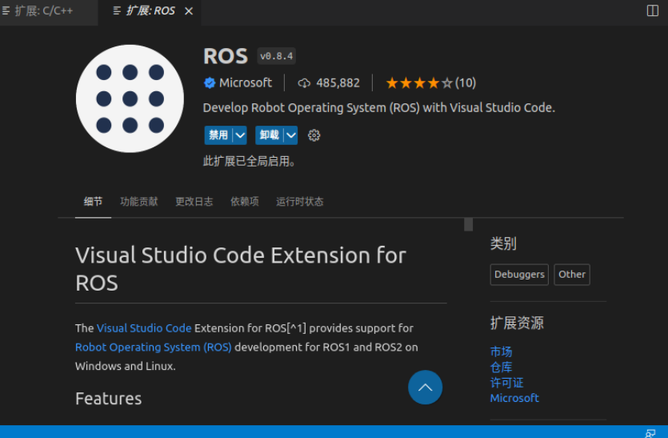
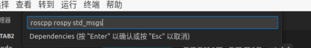

ROS 基于VScode的节点调试
ROS节点：调试（基于VScode）
我们已经学会创建一个简单的 ROS 节点了，但是，我们应当要学会调试，毕竟，我们的代码可不会那么短！出现了问题调试就是必然的！
下面开始介绍基于Vscode的 ROS 的调试办法：
创建调试用的节点
首先 cd 到工作文件夹，创建他们
mkdir -p workTab2/src
cd workTab2
catkin_make 以准备好基本的文件！
下载插件
VScode 有两个很是好用的插件！一个是ROS，另一个是 catkin_tools 他们可以让你很好的进行ROS运行和调试（不用再命令框里看了！）。
那么问题来了，在哪里打开VScode 呢？显然不是随便打开，也不是在src文件，而是在工作文件夹 workTab2 下，
这个地方，准备 ctrl+alt+T打开终端：
code . 这是结构！就出来了：
点击最左侧栏目中的第四个：扩展，安装
好消息是：一般你已经安上了。
但是这两个：

是你大概率没有安装的！安上！
好了！让我们见识一下这玩意好用不好用！
一般的，在官方的命令行创建时如下的
cd ~/workTab2/src
catkin_create_pkg talker roscpp rospy std_msgs 命令行快，但是不够可视化。那我们安装的插件是怎么处理的呢？看到VScode 的文件管理器：右键 src
怎么着？有一个 Create Catkin Package 了，点击它：
留意这里！你可以输入你想创建的节点名字！

你一需要的 dependencies （就是命令行后半部分的内容）
一个回车：包创建结束
Coding时间
在我们的 src 文件夹下，右键整一个新文件：写完代码
现在你无论是调试还是运行都不行！缺少配置文件！这是最最最麻烦的地方！！！
补全配置文件
CmakeLists.txt 的内容补全
有点捞，这个还是要我们自己在文件中手动补充！
aux_source_directory(./src SRCS)
add_executable(talker ${SRCS})
target_link_libraries(talker ${catkin_LIBRARIES}) 有趣的是！这次我们不需要再次改动 Cmake的最低要求版本了！
查看c_cpp_properties.json
一般我们改动添加：
"compileCommands": "${workspaceFolder}/build/compile_commands.json" 我们后面会知道，这是调用产生的调试文件，等效于在命令行输入了：
catkin_make -DCMAKE_EXPORT_COMPILE_COMMANDS= YES 后调用它，他在 devel/lib里面！
不同于我参考的，我选择了直接在命令行里直接编译产生二进制文件：
catkin_make catkin_make -DCMAKE_EXPORT_COMPILE_COMMANDS= YES 省事！
不用改动settings.json
手动产生task.json
我说停！不是让你 vim task.json ，而是在Vscode 里摁下 ctrl + shift + P
输入 tasks: configure task单击一下，注意，会弹出来很多东西！找到：catkin_make: build 点击（其他的我不清楚，萌新QAQ）。
对文件做出如下的修改：
{
"version": "2.0.0",
"tasks": [
{
"label": "catkin_make", //代表提示的描述性信息
"type": "shell", //可以选择shell或者process,如果是shell代码是在shell里面运行一个命令，如果是process代表作为一个进程来运行
"command": "catkin_make",//这个是我们需要运行的命令
"args": [
"-DCMAKE_EXPORT_COMPILE_COMMANDS=ON"
],//如果需要在命令后面加一些后缀，可以写在这里，比如-DCATKIN_WHITELIST_PACKAGES=“pac1;pac2”
"group": {"kind":"build","isDefault":true},
"presentation": {
"reveal": "always"//可选always或者silence，代表是否输出信息
},
"problemMatcher": "$msCompile"
},
]
} ！我参考的 CSDN 的作者说他不清楚为什么需要添加
"-DCMAKE_EXPORT_COMPILE_COMMANDS=ON" 这是因为我们本质上是链接 ROS 官方的调试文件产生方法，从那里来调试，如果我们不在这里下这个指令，以及不在c_cpp_properties.json 做出那样更改的话：我们无法链接那个文件！
手动创建 launch.json
别！不用 vim. 最聪明的办法是
点击它，配置如下内容
{
"version": "0.2.0",
"configurations": [
{
"name": "(gdb) Launch",
"type": "cppdbg",
"request": "launch",
# 这里要修改，找到编译生成的二进制可执行文件
# 这里！！！！！！！！！！！！！！！！！！！！！！！！
"program": "${workspaceFolder}/build/talker/talker",
"args": [],
"stopAtEntry": false,
//"preLaunchTask": "build",
"cwd": "${workspaceFolder}",
"environment": [],
"externalConsole": false,
"MIMode": "gdb",
"targetArchitecture": "x64",
"avoidWindowsConsoleRedirection": true,
"setupCommands": [
{
"description": "Enable pretty-printing for gdb",
"text": "-enable-pretty-printing",
"ignoreFailures": true
}
]
}
]
} 好的，如果你执行过：
catkin_make -DCMAKE_EXPORT_COMPILE_COMMANDS= YES 那你就去 build下面找！
我的是：
~/workTab2/build/talker/talker 而如果你是采用 Ctrl + shift+ B VScode 的 task.json 来帮你编译的：就去devel/lib下找！
~/workTab2/devel/lib/talker/talker 总而言之，找到你的二进制文件在哪里！！！
现在的现在，再次编译一次！！！Ctrl+shift+B!!!
如果出现了编译成功（粉色的蓝色的绿色的都有，但是红色的就是寄！这个时候会给你报一些警告和错误！可以留意）
随后，尝试调试：

出现这个，恭喜你！调试成功！可以打断点了！
OK！下班！！！
如果对文件有所更改，请注意，你需要重新编译：Ctrl + Shift + B，随后再次调试！
如果断点失效，博主这里没有什么更好的办法（整了几个小时也没拿出可行的方案（彩笔落泪）），那只好试试重新生成文件看看！